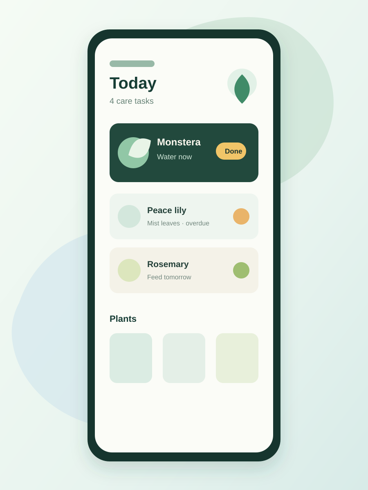
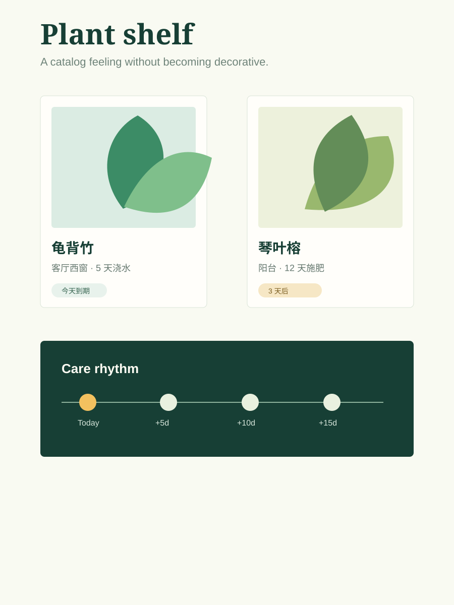
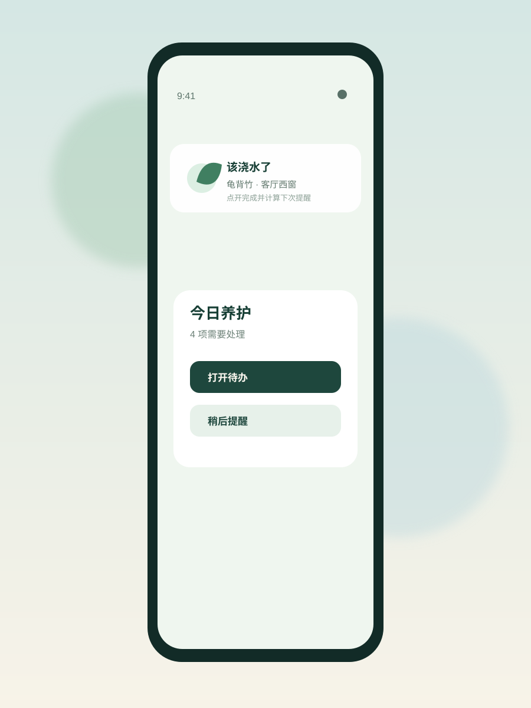
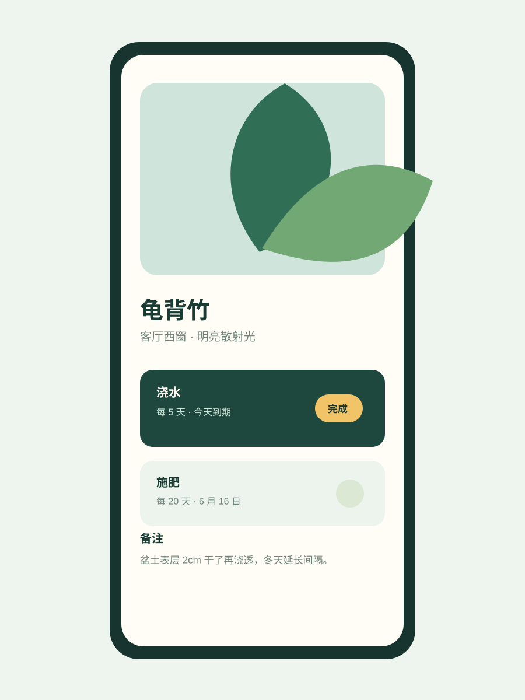
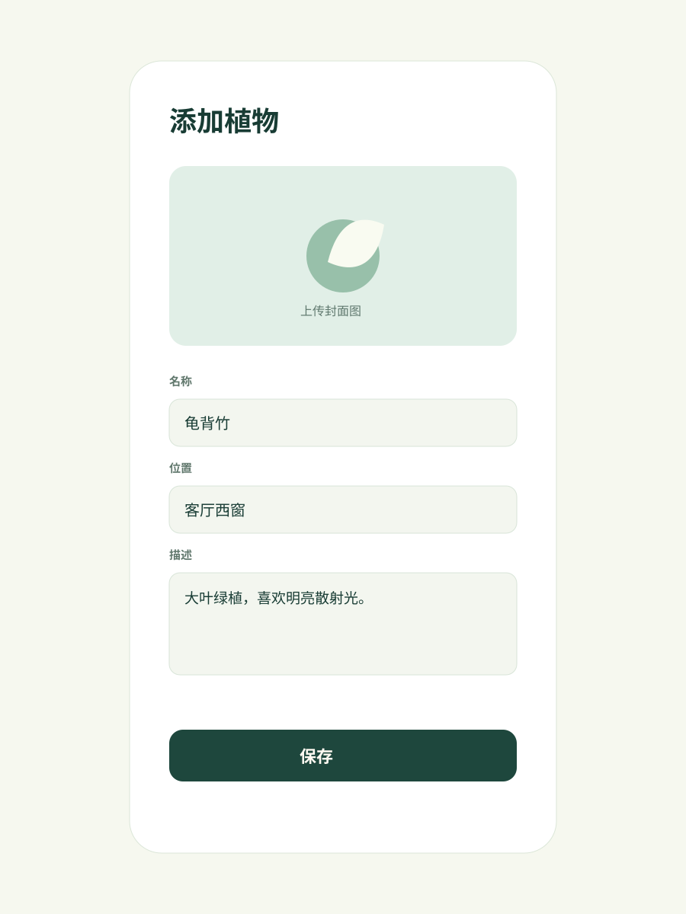
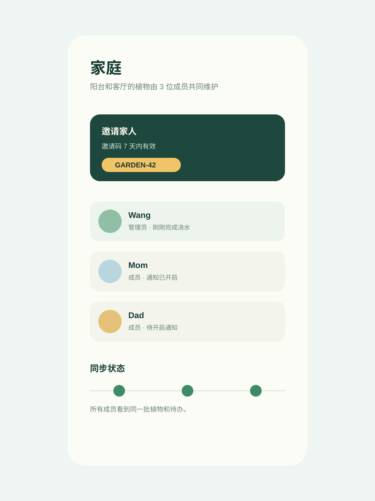
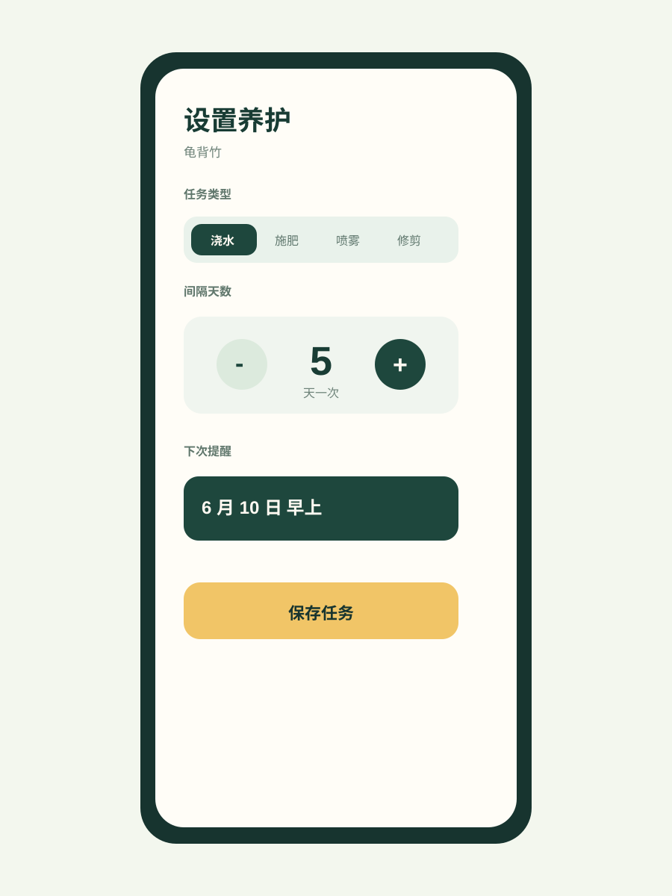
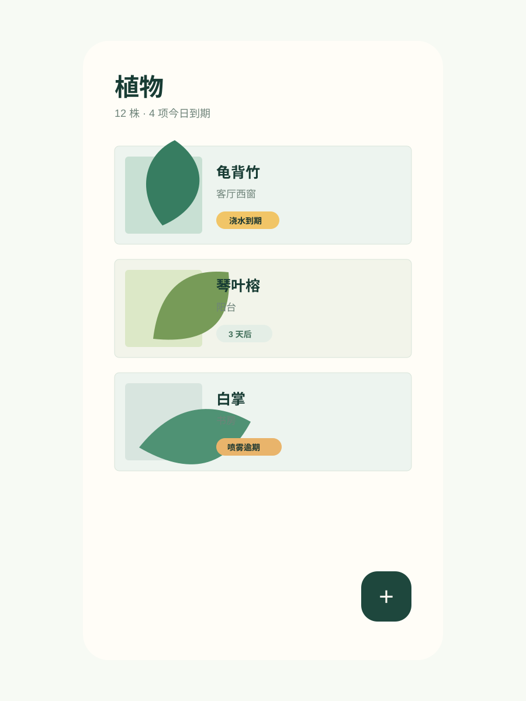

Moodboard · Plant Care Reminder
清爽、安静、任务优先的家庭园艺工具
这版 moodboard 面向 iPhone PWA，不做营销感首页，也不做复杂园艺社区。每张图都是一个单独视觉参考，用来约束后续移动端设计稿的布局、色彩、节奏和操作密度。
家庭植物养护提醒 PWA
iPhone first
叶绿 + 雾蓝 + 暖白
待办优先
手机紧凑

Task-first dashboard
首屏直接服务“今天要做什么”，完成按钮清晰，适合家庭成员快速处理。

Botanical card system
植物资料卡更像图鉴，但保留工具效率，可用于植物列表和详情页。

iPhone notification path
强调 PWA 通知体验，从提醒进入待办，再完成并计算下次时间。

Plant detail ritual
详情页把照片、备注和养护任务合在一个稳定操作面板里。

Quiet form flow
新增植物表单要少字段、低噪音，图片上传失败也不打断用户填写。

Family sync
家庭空间不是后台配置页，而是能让成员理解“共享状态”的地方。

Care task editor
养护周期用步进器和分段选择表达，减少手机键盘输入。

Photo-led plant list
列表以真实植物照片为主信号，任务状态作为第二层扫描信息。